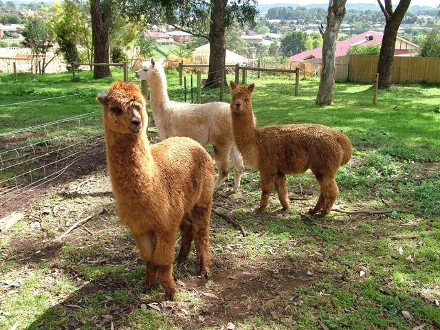
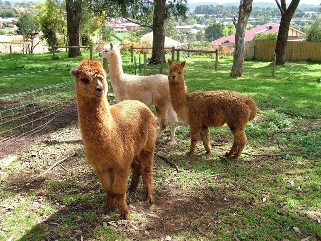

Yet another jQuery plugin for slideshows. Super lightweight (2.3KB). Uses CSS3 Transitions when available. Offers a gotoSlide(index) method and a beforeTransition(index) callback. Fork on Github. Read about it in the Labs.
 
